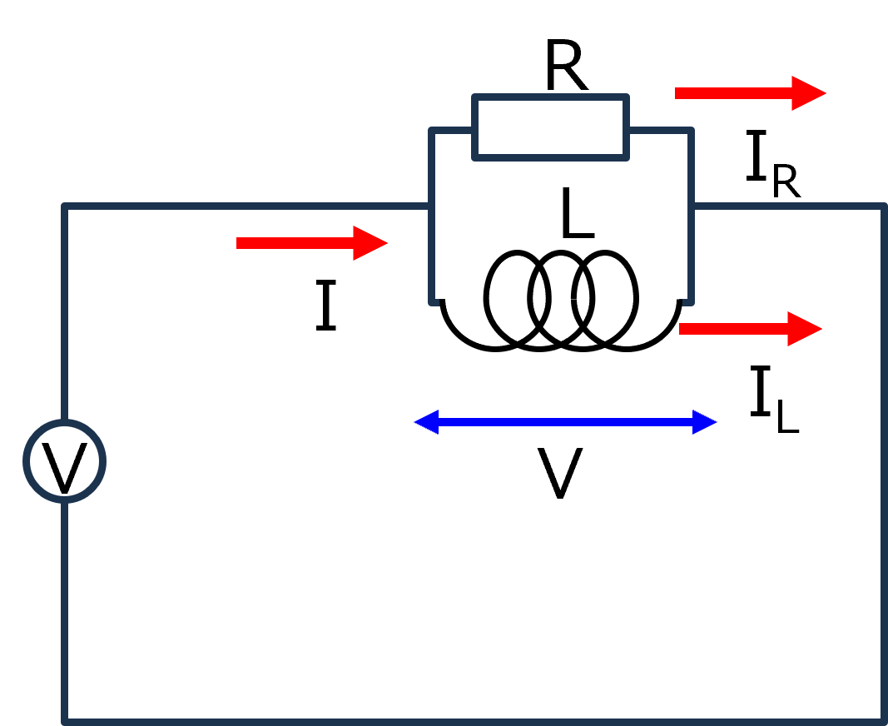
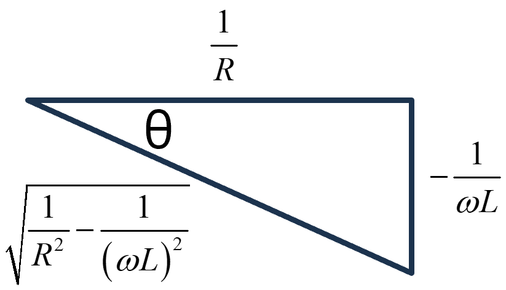
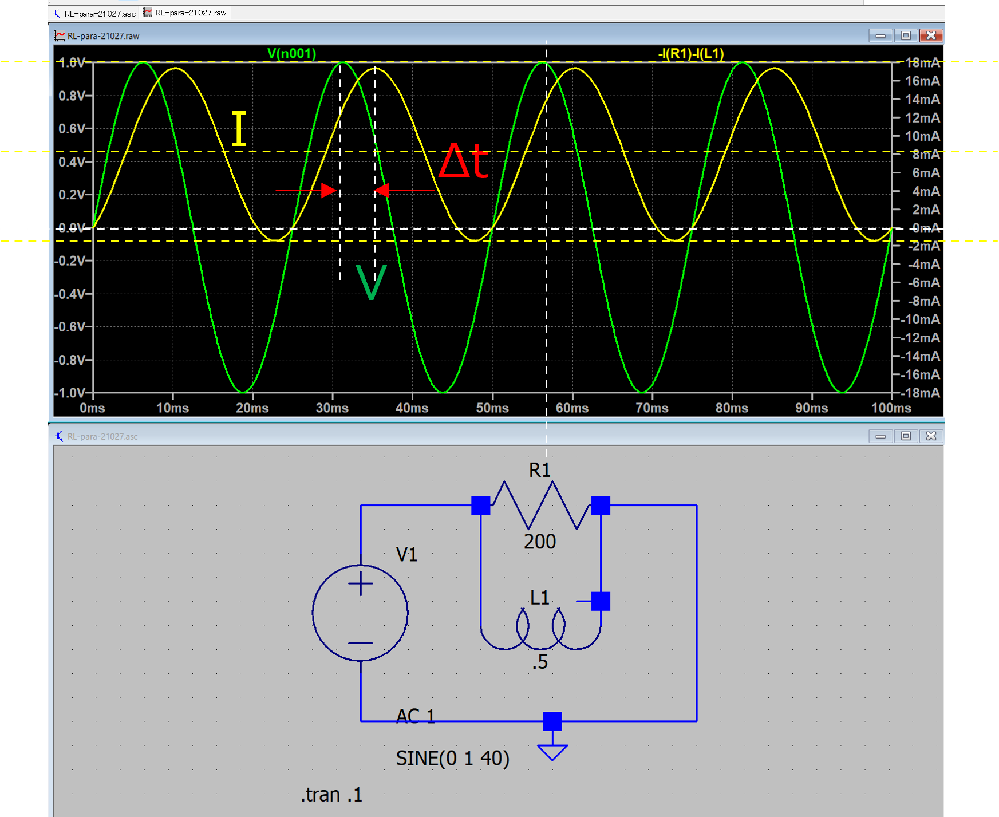

回路-12-2
RL並列交流回路を真面目に解く

RとLが並列に並んだ交流回路をまじめに考えます．
交流電源は，
\(\Large V(t) = V_0 \cdot e^{j \omega t} \)
流れる電流，I(t)，は並列回路で，
\(\Large I(t) = I_R(t) + I_L(t) \)
となります．
\(\Large I_R(t) = \displaystyle \frac{V(t)}{R} = \frac{V_0}{R} \cdot e^{j \omega t} \)
\(\Large I_L(t) = \displaystyle \frac{1}{L} \int dV(t) \ dt = \frac{V_0}{j \omega L} \cdot e^{j \omega t} + D \)
したがって，
\(\Large I(t) = I_R(t) + I_L(t) = \frac{V_0}{R} \cdot e^{j \omega t} + \frac{V_0}{j \omega L} \cdot e^{j \omega t} + D \)
\(\Large = V_0 \ \left[ \frac{1}{R} + \frac{1}{j \omega L} \right] \cdot e^{j \omega t} + D \)
初期条件は，I(0) = 0，となるので，
\(\Large I(0) = 0 = V_0 \ \left[ \frac{1}{R} + \frac{1}{j \omega L} \right] + D \)
\(\Large D = -V_0 \ \left[ \frac{1}{R} + \frac{1}{j \omega L} \right] \)
となるので，，
\(\Large I(t) = V_0 \ \left[ \frac{1}{R} + \frac{1}{j \omega L} \right] \cdot e^{j \omega t} -V_0 \ \left[ \frac{1}{R} + \frac{1}{j \omega L} \right] \)
\(\Large = V_0 \ \left[ \left( \frac{1}{R} + \frac{1}{j \omega L} \right) \cdot e^{j \omega t} - \left( \frac{1}{R} + \frac{1}{j \omega L} \right) \right] \)
\(\Large = V_0 \ \left[ \left( \frac{1}{R} - \frac{j}{ \omega L} \right) \cdot e^{j \omega t} - \frac{1}{R} + \frac{j}{ \omega L} \right] \)
となります．ここで複素平面を考えるために，
\(\Large = \displaystyle V_0 \left[ \sqrt{ \frac{1}{R^2} - \frac{1}{ (\omega L)^2}} \frac{\frac{1}{R} - \frac{j}{ \omega L}}{\sqrt{ \frac{1}{R^2} - \frac{1}{ (\omega L)^2}}} \cdot e^{j \omega t} - \frac{1}{R} + \frac{j}{ \omega L} \right] \)
とし，最初の項を，複素平面で，

と考えると，
\(\Large cos \ (- \theta) = \displaystyle \frac{1/R }{\sqrt{ \frac{1}{R^2} - \frac{1}{ (\omega L)^2}}} \)
\(\Large j \ sin \ (-\theta) = \frac{ \displaystyle - \frac{1}{ \omega L}}{\sqrt{ \frac{1}{R^2} - \frac{1}{ (\omega L)^2}}} \)
となるので，
\(\Large \displaystyle \frac{\frac{1}{R} - \frac{j}{ \omega L}}{\sqrt{ \frac{1}{R^2} - \frac{1}{ (\omega L)^2}}} = cos \ (- \theta) + j \ sin \ (- \theta) = e^{- j \ \theta} \)
となります．ここで，
\(\Large tan \ (- \theta) = \displaystyle \frac{R}{\omega L} \)
です．したがって，電流は，
\(\Large I(t) = V_0 \left[e^{-j \ \theta} \cdot \displaystyle \sqrt{ \frac{1}{R^2} - \frac{1}{ (\omega L)^2}} \cdot \ e^{j \omega t} - \frac{1}{R} + \frac{j}{ \omega L} \right]\)
\(\Large =\displaystyle V_0 \left[ \cdot \sqrt{ \frac{1}{R^2} - \frac{1}{ (\omega L)^2}} \cdot e^{j (\omega t - \theta)} - \frac{1}{R} + \frac{j}{ \omega L} \right]\)
となります．ここで，三角関数に戻すために，虚数部分のみ取り出すと，
\(\Large Im[I(t)] = \displaystyle V_0 \left[ \sqrt{ \frac{1}{R^2} - \frac{1}{ (\omega L)^2}} \cdot sin \ (\omega t + \theta) + \frac{1}{ \omega L} \right] \)
となり，DC成分込みの式の導出ができました．
実際にRL並列交流回路を作ってみてシミュレートしてみました．

条件は，
f = 40 Hz
R = 200 Ω
L = 0.5 H
V0 = 1 V
ということで，
\(\Large \omega = 40 \cdot 2 \cdot \pi = 251.3 \ rad/s \)
となります．インピーダンスから求めたので，DC値は考慮していない計算となりましたが，シミュレーションはDC値が考慮されていました．
詳しい導出方法は，こちら，で．
振幅
コンデンサ直下の電流値の振幅は，
\(\Large \displaystyle V_0 \cdot \sqrt{ \frac{1}{R^2} - \frac{1}{ (\omega L)^2}} = 9.398 \ mA \)
と電流の振幅が計算どおりとなっていることがわかります．
実際のPeak to Peakは，
\(\Large \displaystyle \frac{17.35 - (-1.435)}{2} = 9.3925 \ mA \)
でした．
位相
今回は，この計算は使わずに，ピーク地点同士の差から求めました．
\(\Large \Delta t = 3.99 \ ms \)
理論値は，
\(\Large tan^{-1} \ \frac{R}{\omega L} = -1.01 \ rad \)
周波数は40 Hz，ですので，一周期が，1/40 = 25 ms.
\(\Large \frac{-1.01}{ 2 \pi} \times 25 \ ms = 4.02 \ ms \)
とほぼ一致していることがわかります．
DC成分
\(\Large \frac{V_0}{ \omega L} = 7.96 \ mA \)
となり，実際のPeak to peakを計算すると，
\(\Large \displaystyle \frac{17.35 + (-1.435)}{2} = 7.958 \ mA \)
とほぼ一致していることがわかります．